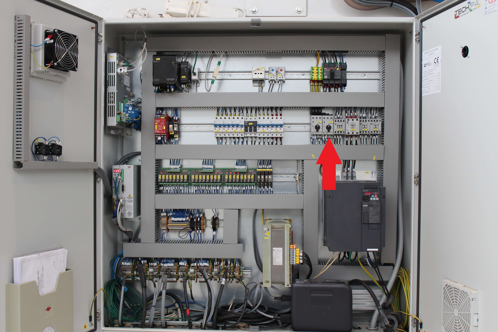
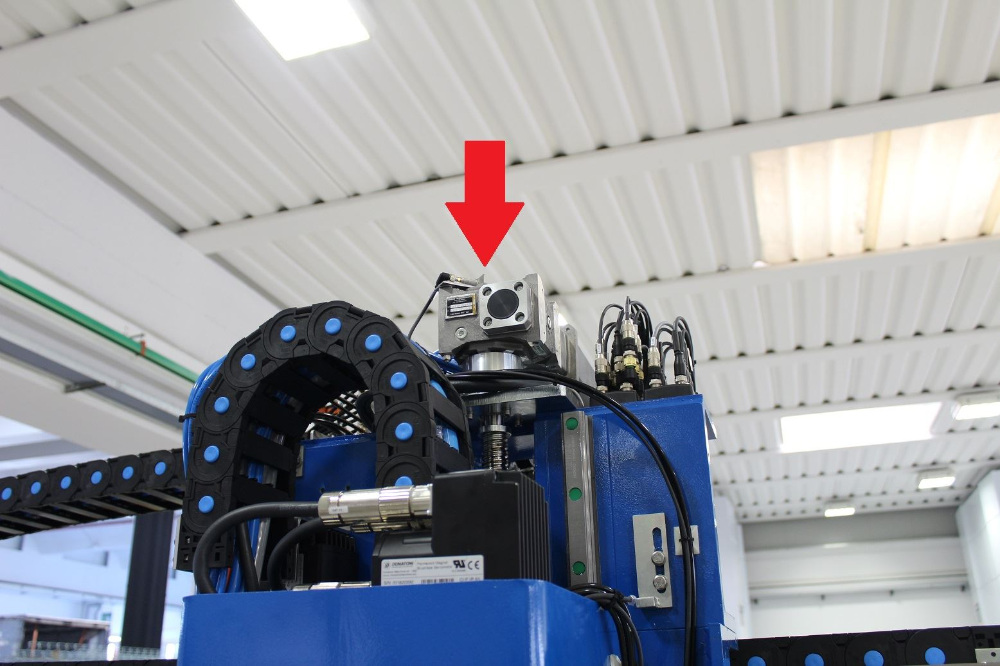
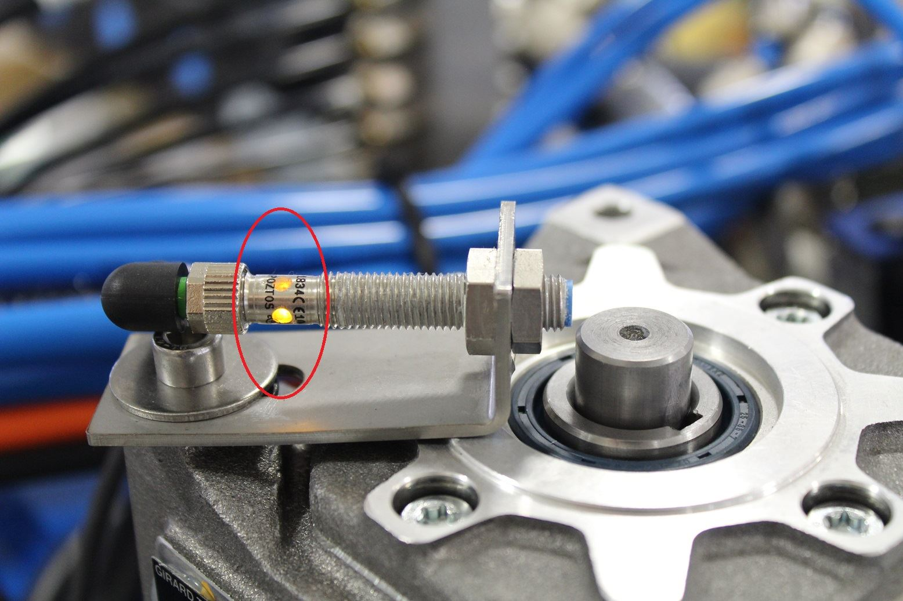
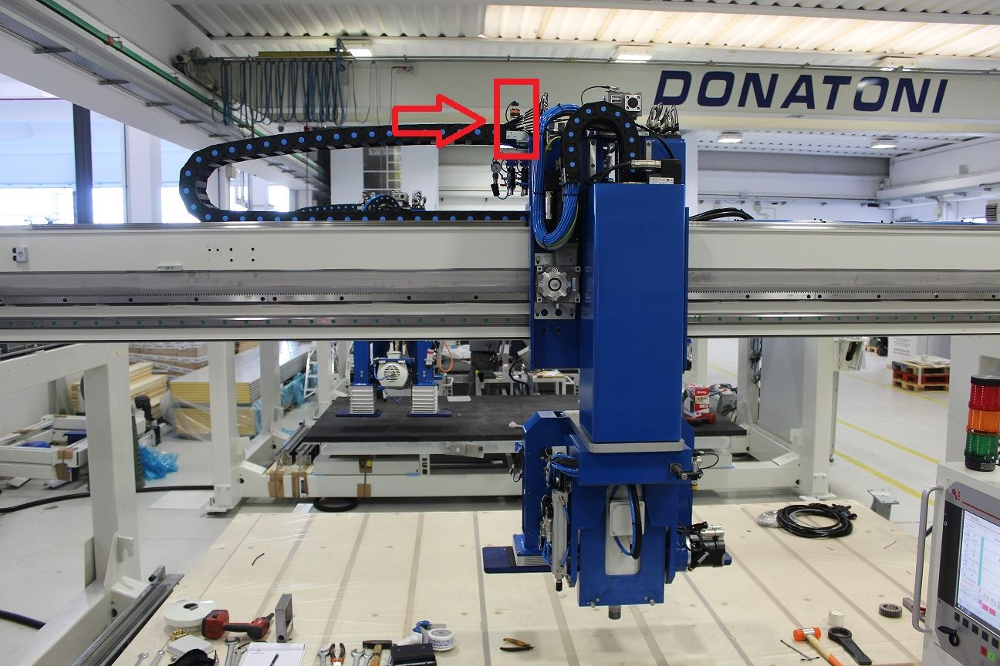
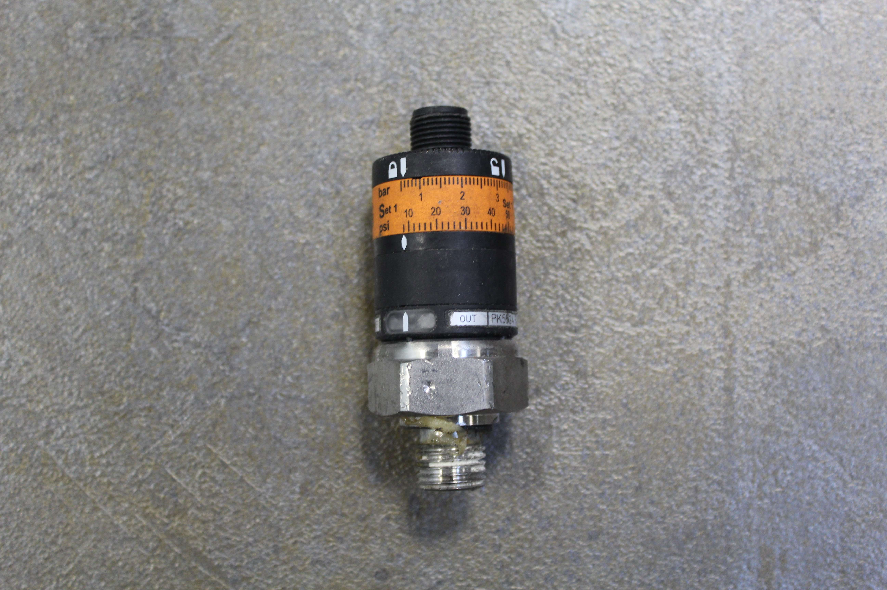
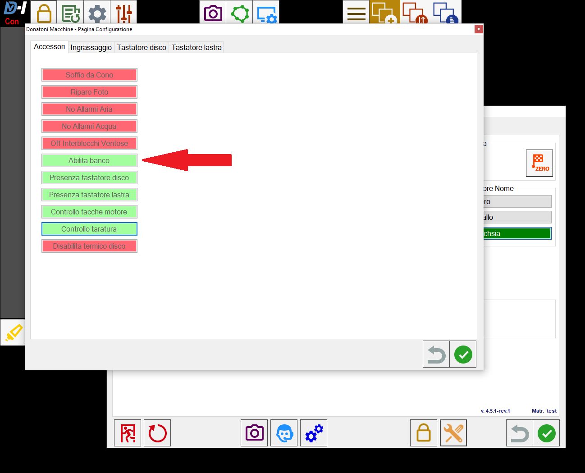
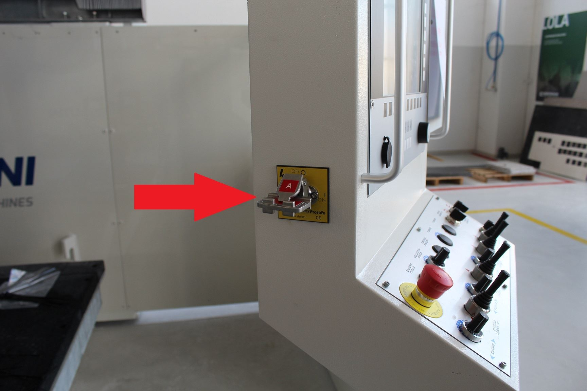
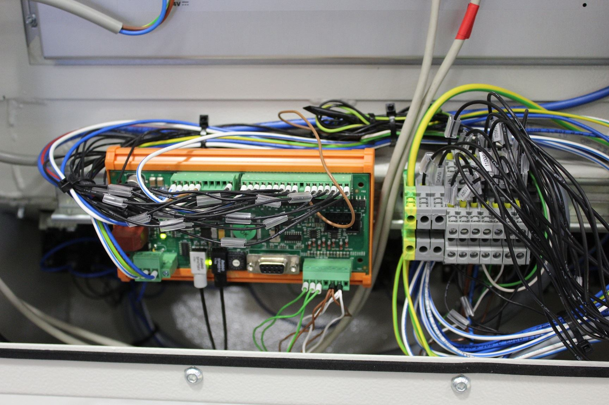
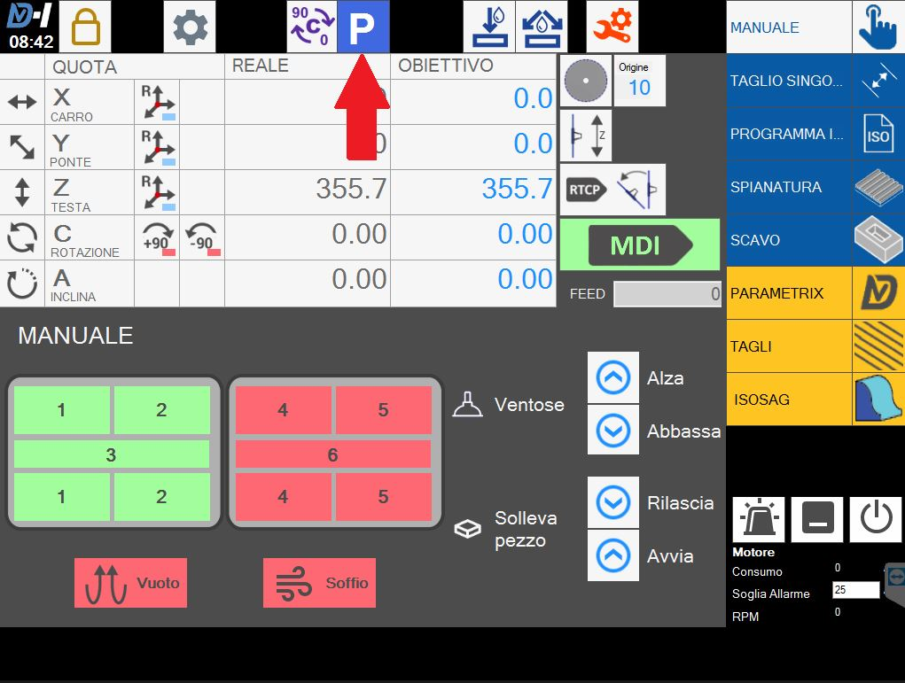

Troubleshootings IT-IT Home
Questo documento descrive le procedure di troubleshooting per l’identificazione e la risoluzione dei problemi più comuni delle macchine Donatoni e dei software installati.
L’obiettivo è ridurre i tempi di fermo macchina e guidare l’operatore nella diagnosi iniziale, indicando quando è necessario l’intervento dell’assistenza tecnica.
- ARTICOLI TROUBLESHOOTING
- PE0000 EMERGENZA GENERALE
- PE0003 MANCANZA TENSIONE DI RETE
- PE0005 MANCANZA ABILITAZIONE COMANDI
- PE0006 TERMICO POMPA BANCO ATTIVO
- PE0007 TERMICO DISCO ATTIVO
- PE0008 FC COLLISIONE ATTIVO
- PE0009 RICH. QUOTA COLLISIONE
- PE0010 EXTRACORRENTE ASSE X
- PE0011 EXTRACORRENTE ASSE Y
- PE0012 EXTRACORRENTE ASSE Z
- PE0013 EXTRACORRENTE ASSE A
- PE0014 EXTRACORRENTE ASSE C
- PE0015 EXTRACORRENTE MANDRINO
- PE0016 MANCANZA ACQUA
- PE0018 FEED NULLA IMPOSTARE 0
- PE0019 ERRORE SU AZIONAMENTI
- PE0021 BANCO RIBALTABILE NON IN POSIZIONE
- PE0023 MUTING ATTIVO
- PE0027 MANCANZA ACQUA INTERNA
- PE0028 ASSE A NON IN POSIZIONE CORRETTA
- PE0029 IMPIANTO DI LUBRIFICAZIONE GUASTO
- PE0031 SOVRATEMPERATURA QUADRO
- PE0041 CH 0 PROGRAMMA SENZA M2-M30
- PE0065 TERMICO POMPA VUOTO ATTIVO
- PE0066 MANCANZA ARIA
- PE0067 VUOTO NON GENERATO
- PE0069 VENTOSE NON IN PARCHEGGIO
- PE0070 VENTOSE GIÀ A CONTATTO (ERRORE)
- PE0095 ALLARME INVERTER
- PM0011 PISTONE TASTATORE FUORI POSIZIONE
ARTICOLI TROUBLESHOOTING
- PE0000 EMERGENZA GENERALE
- PE0003 MANCANZA TENSIONE DI RETE
- PE0005 MANCANZA ABILITAZIONE COMANDI
- PE0006 TERMICO POMPA BANCO ATTIVO
- PE0007 TERMICO DISCO ATTIVO
- PE0008 FC COLLISIONE ATTIVO
- PE0009 RICH. QUOTA COLLISIONE
- PE0010 EXTRACORRENTE ASSE X
- PE0011 EXTRACORRENTE ASSE Y
- PE0012 EXTRACORRENTE ASSE Z
- PE0013 EXTRACORRENTE ASSE A
- PE0014 EXTRACORRENTE ASSE C
- PE0015 EXTRACORRENTE MANDRINO
- PE0016 MANCANZA ACQUA
- PE0018 FEED NULLA IMPOSTARE 0
- PE0019 ERRORE SU AZIONAMENTI
- PE0021 BANCO RIBALTABILE NON IN POSIZIONE
- PE0023 MUTING ATTIVO
- PE0027 MANCANZA ACQUA INTERNA
- PE0028 ASSE A NON IN POSIZIONE CORRETTA
- PE0029 IMPIANTO DI LUBRIFICAZIONE GUASTO
- PE0031 SOVRATEMPERATURA QUADRO
- PE0041 CH 0 PROGRAMMA SENZA M2-M30
- PE0065 TERMICO POMPA VUOTO ATTIVO
- PE0066 MANCANZA ARIA
- PE0067 VUOTO NON GENERATO
- PE0069 VENTOSE NON IN PARCHEGGIO
- PE0070 VENTOSE GIÀ A CONTATTO (ERRORE)
- PE0095 ALLARME INVERTER
- PM0011 PISTONE TASTATORE FUORI POSIZIONE
PE0000 EMERGENZA GENERALE
Spiegazione dell'errore
Macchina in situazione di emergenza, la lampadina rossa è lampeggiante e la macchina non si muove. Il circuito delle emergenze risulta aperto.
Possibili cause
Fungo di emergenza premuto;
Guasto del fungo di emergenza;
Guasto della centralina di sicurezza all'interno del quadro eletrrico;
Cavo multipolare collegato dalla consolle al quadro elettrico guasto;
Possibili soluzioni
Sbloccare fungo di emergenza:

Controllare il corretto funzionamento del fungo e dei contatti elettrici collegati posti al di sotto del fungo stesso (pulsantiera consolle);

Controllare il corretto funzionamento della centralina ovvero, una volta verificato che il circuito delle emergenze come da schema elettrico sia chiuso, la centralina dovrà funzionare nel seguente modo:
Con fungo di emergenza premuto (circuito delle emergenze aperto):

Con fungo di emergenza rilasciato(circuito emergenza chiuso):

Verificare la continuità tra i cavi collegati sui contatti del fungo e i rispettivi cavi collegati nella morsettiera relativa nel quadro elettrico reperire le info sullo schema;
Articoli collegati
PE0003 MANCANZA TENSIONE DI RETE
Spiegazione dell'errore
La macchina si trova in una situazione di allarme in quanto la tensione di alimentazione generale del quadro risulta assente, la macchina si spegnerà in automatico dopo un minuto per salvaguardare i componenti elettronici.
Possibili cause
Mancanza di tensione in ingresso al quadro elettrico;
Relè di tensione presente su UPS guasto o collegamenti non corretti;
Possibili soluzioni
Si consiglia l'ausilio di un tecnico Donatoni presente sul posto o di un elettricista.

Controllare con un Multimetro in funzionalità AC se all'ingresso dell'interruttore generale della macchina sia presente la tensione, in caso non ci sia tensione il problema è a monte della macchina;

Controllare se al relè relativo alla tensione presente su UPS arrivi in ingresso i 220 V in AC e in uscita ci siano 0 V in DC (il relè deve essere collegato NC);


Articoli collegati
PE0005 MANCANZA ABILITAZIONE COMANDI
Spiegazione dell'errore
Viene visualizzato all'accensione della macchina o successivamente al rilascio del fungo di emergenza.
Possibili cause
Il pulsante di abilitazione comandi (RESET) non è stato premuto;
Malfunzionamento del pulsante abilitazione comandi (RESET) sul quadro elettrico;
Malfunzionamento centralina di sicurezza Pilz.
Possibili soluzioni
Premere il pulsante reset sul quadro elettrico

Controllare contatti del pulsante di abilitazione comandi ovvero quando tengo premuto il pulsante il contatto deve chiudersi e deve apparire sulla centralina il led di start verde in caso sostituire i contatti del pulsante;


Articoli collegati
PE0006 TERMICO POMPA BANCO ATTIVO
Spiegazione dell'errore
Anomalia sull'impianto di sollevamento banco; L'interruttore magnetotermico relativo al banco è scattato, esso offre una protezione sull'impianto sia ai cortocircuiti sia ai sovraccarichi. Per riarmare l'interruttore spostare il selettore a 0 e successivamente a 1;


Possibili cause
Le cause possono essere suddivise in problemi Meccanici o Elettrici
Problemi meccanici:
Motore pompa olio bloccato, si può provare ad avviare la pompa del banco e vedere se effettivamente gira in caso di bloccaggio completo si cambia la pompa dell'olio;
L'olio all'interno del serbatoio è insufficiente;
L'olio all'interno del serbatoio è poco e molto sporco o il filtro è sporco;
Banco ribaltabile bloccato
Problemi elettrici:
Cortocircuito tra fasi motore;
Mancanza di una fase;
Cortocircuito avvolgimenti del motore;
Interruttore Guasto
Possibili soluzioni
Nelle foto sottostanti c'è la pompa con segnati i relativi punti di interesse;


MECCANICHE
Per prima cosa controllare che la ventolina di raffreddamento del motore giri libera, ovvero con un cacciavite per esempio provare a muovere la ventolina, se risulta bloccata la pompa si deve cambiare .
Controllare il livello dell'olio con una bacchetta pulita, e controllare se si hanno dei depositi sul fondo:
se il livello è basso rabboccare con Olio densità 32 e tenere periodicamente sotto occhio l'impianto se si svuota nuovamente poiché potrebbero esserci perdite;
se è presente molto sporco svuotare il serbatoio (c'è un tappo nel serbatoio) e pulirlo con il gasolio e successivamente riempirlo;
Controllare se gli snodi del pistone e gli snodi dei banchi non siano bloccati quindi successivamente ingrassare nei relativi punti.

ELETTRICHE → è consigliato l'ausilio di un elettricista o tecnico Donatoni presente sul posto
Controllare che non ci sia continuità tra le varie fasi; scollegare il cavo dalla scatola elettrica della pompa, isolare i terminali e riarmare l'interruttore attivare la pompa dell'olio se scatta il problema potrebbe essere il cavo;
Misurare la tensione in ingresso con un multimetro e verificare la presenza di tutte le fasi, se manca ad esempio una fase controllare che siano tirati tutti i morsetti;
Se effettuando la prova al punto 1 l'interruttore non scatta, collegare il cavo alla pompa, se, avviando la pompa l'interruttore scatta il problema è la pompa quindi sarà da sostituire;
Articoli collegati
PE0007 TERMICO DISCO ATTIVO
Spiegazione dell'errore
L’allarme termico disco è generato qualora l’inverter che gestisce la rotazione del mandrino abbia malfunzionamenti.
Possibili cause
Le cause di questo errore sono da valutare di volta in volta poiché si dovrà aprire il quadro elettrico e controllare i messaggi di errore dell'inverter.
NB: per aprire il quadro elettrico effettuare la procedura di
Apertura quadro elettrico acceso
Possibili soluzioni
Le soluzioni al problema dipenderanno dallo stato dell'inverter, importante è valutare se il problema è dato dai collegamenti Post inverter o Pre inverter:
Per esempio provare a scollegare il cavo del mandrino e provare ad avviare il disco e vedere se si ripresenta l'errore.
Articoli collegati
PE0008 FC COLLISIONE ATTIVO
Spiegazione dell'errore
Lo stato del sensore del Finecorsa collisione posto sopra alla chiocciola dell'asse Z è cambiato di stato.


Possibili cause
Le cause della comparsa di questo errore sono molteplici:
La macchina si trova piantata nel materiale o nel banco e quindi il sensore sopra la chiocciola dell'asse Z si trova coperto;
il sensore è guasto
il cavo dal sensore al ripartitore passivo sul carro guasto;


possibili guasti nei cavi dal ripartitore passivo al quadro
Possibili soluzioni
Premere pulsante reset sulla consolle in maniera da fare sparire il messaggio di errore riguardante la collisione, e alzarsi lentamente con l'asse Z fino a sollevarsi dal banco/materiale
Verificare il funzionamento del sensore, ovvero verificare che sia acceso il led sul sensore, e verificare che posizionando un pezzo metallico davanti il sensore il led si spegne; in caso di sensore malfunzionante sostituire;

se il sensore è spento, provare a cambiare ingresso nel ripartitore passivo e vedere se il sensore si accende (ad es collegarlo al posto del sensore asse X), se non si hanno differenze il problema potrebbe essere il cavo o i collegamenti fino al quadro.
Articoli collegati
PE0009 RICH. QUOTA COLLISIONE
Spiegazione dell'errore
Questo messaggio di errore appare ogni volta che si comanda alla macchina in MDI di posizionarsi ad una quota fuori dai limiti delle corse software della macchina;
Possibili cause
Si è impostata la quota banco molto alta;
Si comanda la macchina in MDI di andare in un punto che non può raggiungere con le sue corse.
Possibili soluzioni
Una volta che compare l'errore, premere il pulsante di reset sulla consolle, e verificare l'effettiva quota banco utilizzando i comandi manuali della consolle (verificare valore diametro disco ecc. stare attenti anche all'invlinazione asse A)
Controllare se effettivamente se la macchina riesce a raggiungere le quote obiettivo che vengono impostate;
Articoli collegati
PE0010 EXTRACORRENTE ASSE X
Spiegazione dell'errore
Durante i cicli di lavoro automatico il plc può generare un allarme di Extracorrente per ogni singolo asse, dovuto al superamento della portata massima di sforzo del motore in questione.
Possibili cause
Sforzo eccessivo istantaneo in direzione X
Malfunzionamento motore asse X
Possibili soluzioni
Premere il pulsante di reset, per resettare l'errore, successivamente premere il pulsante di emergenza, riabilitare i comandi e riprendere il normale utilizzo;
Dopo avere provato ad eseguire il punto 1, se si ripresenta l'errore muovendosi a vuoto in qualunque direzione, sostituire il motore asseX
Articoli collegati
PE0011 EXTRACORRENTE ASSE Y
Spiegazione dell'errore
Durante i cicli di lavoro automatico il plc può generare un allarme di Extracorrente per ogni singolo asse, dovuto al superamento della portata massima di sforzo del motore in questione.
Possibili cause
Sforzo eccessivo istantaneo in direzione Y
Malfunzionamento motore asse Y
Possibili soluzioni
Premere il pulsante di reset, per resettare l'errore, successivamente premere il pulsante di emergenza, riabilitare i comandi e riprendere il normale utilizzo;
Dopo avere provato ad eseguire il punto 1, se si ripresenta l'errore muovendosi a vuoto in qualunque direzione, sostituire il motore asseY
Articoli collegati
PE0012 EXTRACORRENTE ASSE Z
Spiegazione dell'errore
Durante i cicli di lavoro automatico il plc può generare un allarme di Extracorrente per ogni singolo asse, dovuto al superamento della portata massima di sforzo del motore in questione.
Possibili cause
Sforzo eccessivo istantaneo in direzione Z
Malfunzionamento motore asse Z
Possibili soluzioni
Premere il pulsante di reset, per resettare l'errore, successivamente premere il pulsante di emergenza, riabilitare i comandi e riprendere il normale utilizzo;
Dopo avere provato ad eseguire il punto 1, se si ripresenta l'errore muovendosi a vuoto, in qualunque direzione sostituire il motore asse Z
Articoli collegati
PE0013 EXTRACORRENTE ASSE A
Spiegazione dell'errore
Durante i cicli di lavoro automatico il plc può generare un allarme di Extracorrente per ogni singolo asse, dovuto al superamento della portata massima di sforzo del motore in questione.
Possibili cause
Sforzo eccessivo istantaneo in direzione A
Malfunzionamento motore asse A
Possibili soluzioni
Premere il pulsante di reset, per resettare l'errore, successivamente premere il pulsante di emergenza, riabilitare i comandi e riprendere il normale utilizzo;
Dopo avere provato ad eseguire il punto 1, se si ripresenta l'errore muovendosi a vuoto, in qualunque direzione sostituire il motore asse A;
Articoli collegati
PE0014 EXTRACORRENTE ASSE C
Spiegazione dell'errore
Durante i cicli di lavoro automatico il plc può generare un allarme di Extracorrente per ogni singolo asse, dovuto al superamento della portata massima di sforzo del motore in questione.
Possibili cause
Sforzo eccessivo istantaneo in direzione C
Malfunzionamento motore asse C
Possibili soluzioni
Premere il pulsante di reset, per resettare l'errore, successivamente premere il pulsante di emergenza, riabilitare i comandi e riprendere il normale utilizzo;
Dopo avere provato ad eseguire il punto 1, se si ripresenta l'errore muovendosi a vuoto, in qualunque direzione sostituire il motore asse C;
Articoli collegati
PE0015 EXTRACORRENTE MANDRINO
Spiegazione dell'errore
Durante i cicli di lavoro automatico il plc può generare un allarme di Extracorrente dell' elettromandrino, dovuto al superamento della portata massima di sforzo del motore in questione. La soglia viene impostata in base al tipo di lavorazione, e di conseguenza al numero di giri dell' elettromandrino.
Generalmente si inizia una lavorazione, si guarda il valore dell'assorbimento del disco/fresa successivamente si imposterà una valore di soglia 3/5A maggiore rispetto il valore assorbito durante il normale funzionamento.

Possibili cause
Impostato un valore di soglia dell'allarme non corretto per il tipo di lavorazione;
Assorbimento elettromandrino troppo elevato dovuto a lavorazioni con velocità troppo elevate.
Utensile non adatto al tipo di lavorazione effettuata
Cuscinetti da sostituire
Possibili soluzioni
Correggere il valore di soglia ampere
Diminuire gradualmente le velocità fino a trovare le velocità corrette
Controllare l'utensile se è adatto alle lavorazioni che si stanno eseguendo, e se non è un utensile molto consumato e quindi non taglia
Articoli collegati
PE0016 MANCANZA ACQUA
Spiegazione dell'errore
Questo allarme è legato alla mancanza del segnale di ingresso del pressostato dell'acqua del disco, durante un ciclo automatico.
I pressostati sono in questa posizione e sono di due tipi:



Possibili cause
Le possibilità sono molteplici:
Mancanza effettiva dell'acqua;
Pressostato regolato per una pressione dell'acqua troppo alta;
Pressostato guasto;
Guasto tra collegamenti pressostato quadro.
Possibili soluzioni
Controllare le motivazioni della mancanza d'acqua, se magari è solamente un calo di pressione.
Regolare il pressostato alla pressione desiderata, per la regolazione dei pressostati seguire la procedura di regolazione in base al tipo di pressostato EUROSWITCH o IFS (Scheda tecnica IFS);
Sostituzione del pressostato con uno dello stesso tipo possibilmente;
Controllare seguendo lo
Articoli collegati
PE0018 FEED NULLA IMPOSTARE 0
Spiegazione dell'errore
Messaggio di errore che compare durante l'avvio di un ciclo automatico o semiautomatico, dovuto al fatto che qualche velocità di lavorazione è impostata a zero;
Possibili cause
Impostata una o più velocità di lavorazione a 0mm/min sia in cicli automatici che in cicli semiautomatici;
Possibili soluzioni
Cambiare i parametri di velocità di lavorazione con delle velocità diverse da zero
Articoli collegati
PE0019 ERRORE SU AZIONAMENTI
Spiegazione dell'errore
Errore generico sugli azionamenti, In caso delle macchine Jet e Spin il problema sarà sull' azionamento utilizzato come Alimentatore :
Possibili cause
Le cause sono molteplici e dipende dal messaggio di errore che compare sull'azionamento:
Se l'alimentatore montato è nuovo, potrebbero esserci dei parametri di configurazione non corretti (Messaggi di errore F09, F21 sul display dell'alimentatore);
Alimentatore è guasto;
Possibili soluzioni
Collegarsi all'alimentatore con il cavo COM e riseguire la procedura di
Controllare sul display dell'alimentatore il messaggio di errore ( F07, F09, F21) provare a riavviare la macchina e vedere se ricompare l'errore, valutare se è un problema legato a qualche motore;
Articoli collegati
PE0021 BANCO RIBALTABILE NON IN POSIZIONE
Spiegazione dell'errore
Il banco ribaltabile risulta fuori dalla posizione di parcheggio.


Possibili cause
Le possibili cause di questo allarme sono molteplici, sia di tipo meccanico sia di tipo elettrico:
Per la macchina il banco non si trova nella posizione di parcheggio le motivazioni potrebbero essere:
Il banco è inclinato e non tocca il fine corsa;
Il banco è in posizione di parcheggio ma non tocca il fine corsa;
Fine corsa del banco guasto;
Collegamento tra fine corsa banco e quadro elettrico guasto.
Il banco per qualche motivo meccanico ad esempio tubi rotti, olio mancante, pompa rotta non si riesce a riportare in parcheggio
Possibili soluzioni
!ATTENZIONE! Con l'allarme attivo la macchina non si può movimentare, quindi se la macchina non è in parcheggio saremo in una condizione di blocco, In Parametrix entrare nel primo "Lucchetto" premere il pulsante "Chiave inglese_Cacciavite" e disabilitare il banco, (Se versione Parametrix vecchia entrare in KvIsoGui.exe entrare nell'area riservata con password:"esagv" e disabilitare l'optional "Banco")

Assicurandosi di aver la macchina in parcheggio eseguire le seguenti procedure:
Usare l'apposito selettore posto sulla consolle per posizionare il banco in parcheggio;
Controllare se fisicamente il banco in posizione di parcheggio tocca o no il sensore, in caso non toccasse, controllare se il banco va in battuta sui bulloni in caso affermativo regolare il sensore in maniera tale da toccare il banco;
Aprire KvIsoGui.exe premere il pulsante "Menù" aprire "Monitor I/O" verificare, premendo il finecorsa se l'ingresso relativo ad esso funziona.(FC_SUPP_LOW AT %IW4.13; * IW4.13 FC banco basso)
Se l'ingresso non cambia di stato controllare con un Tester se il finecorsa funziona correttamente (per esempio se metto i puntalini sui morsetti NO quando premo il finecorsa devo chiudere il contatto)
Se il fine corsa funziona correttamente bisognerà controllare i collegamenti; seguire lo
Verificare il funzionamento della pompa e verificare che effettivamente l'impianto non sia guasto;
NB: Ricordare di riabilitare il banco
Articoli collegati
PE0023 MUTING ATTIVO
Spiegazione dell'errore
L'allarme "Muting attivo" è generato automaticamente dal sistema ogni qualvolta viene tolta la chiave del selettore modale dall'apposita posizione sulla consolle.
Per ripristinare l'allarme è sufficiente inserire la chiave di sicurezza sulla consolle e armare la modalità lavoro.

Possibili cause
Chiave del selettore modale non inserita o posizionata su 0;
Collegamento elettrico guasto o errato;
Possibili soluzioni
Girare la chiave o inserirla nell'apposita sede (il selettore deve essere su uno)

Controllare che i collegamenti siano tutti corretti, controllare sullo

Articoli collegati
PE0027 MANCANZA ACQUA INTERNA
Spiegazione dell'errore
Questo allarme è legato alla mancanza del segnale di ingresso del pressostato dell'acqua interna, durante un ciclo automatico.
I pressostati sono in questa posizione e sono di due tipi:


Possibili cause
Le possibilità sono molteplici:
Mancanza effettiva dell'acqua;
Pressostato regolato per una pressione dell'acqua troppo alta;
Pressostato guasto;
Guasto tra collegamenti pressostato quadro.
Possibili soluzioni
Controllare le motivazioni della mancanza d'acqua, se magari è solamente un calo di pressione.
Regolare il pressostato alla pressione desiderata, per la regolazione dei pressostati seguire la procedura di regolazione in base al tipo di pressostato EUROSWITCH o IFS (Scheda tecnica IFS);
Sostituzione del pressostato con uno dello stesso tipo possibilmente;
Controllare seguendo lo
Articoli collegati
PE0028 ASSE A NON IN POSIZIONE CORRETTA
Spiegazione dell'errore
Il sistema genera il messaggio "Asse A non in posizione corretta" ogni volta che viene premuto il pulsante "Parcheggio" o il pulsante "Cambio utensile manuale" e l'asse "A" non si trova in posizione corretta (Zero gradi).
Possibili cause
Si è premuto il pulsante P di parcheggio e l'asse A non si trova a 0.00_ .

Si è premuto il pulsante cambio utensile manuale e l'asse A non si trova a 0.00_

Possibili soluzioni
Movimentare asse A in posizione di 0.00_ prima di premere i pulsanti di parcheggio o cambio utensile manuale
Articoli collegati
PE0029 IMPIANTO DI LUBRIFICAZIONE GUASTO
Spiegazione dell'errore
L'allarme impianto lubrificazione guasto viene visualizzato quando nel circuito di distribuzione del grasso c'è un inceppamento e non riesce a fuoriuscire il grasso; verificare che sia presente il grasso nel serbatoio in quantità minima e successivamente analizzare il percorso di distribuzione.
L'allarme serbatoio grasso vuoto indica che è necessario riempire il serbatoio.
In allegato il manuale della Polipump:
Possibili cause
Serbatoio del grasso vuoto;
Grasso inceppato in uscita dalla pompa;
Errore di cablaggio della pompa del grasso.
Possibili soluzioni
Attraverso l'apposito punto di ricarica pompargli all'interno della pompa il Grasso corretto EP1;
Verificare che nel punto di uscita del grasso dalla pompa non ci siano ostruzioni o che il grasso sia vecchio e solido;
Verificare tramite l'utilizzo dello
NOTA: PER RESETTARE L'ERRORE, PREMERE PER QUALCHE SECONDO IL (PULSANTE START CICLO)_ (PULSANTE -) E RESETTARE ERRORI DIRETTAMENTE SULLA POMPA PREMENDO RESET
Articoli collegati
PE0031 SOVRATEMPERATURA QUADRO
Spiegazione dell'errore
Questo errore compare quando il termostato all'interno del quadro elettrico rileva una temperatura più alta della temperatura massima impostata che solitamente è a 45° C
Possibili cause
Condizionatore o ventola del quadro guasti;
Termostato regolato male;
Possibili soluzioni
Controllare che la ventola di ricircolo funzioni correttamente
Controllare che il termostato relativo alla sovratemperatura all'interno del quadro sia a 45 gradi controllare sullo schema elettrico, inoltre se già impostato alla temperatura corretta controllare che apra e chiuda il contatto.
Articoli collegati
PE0041 CH 0 PROGRAMMA SENZA M2-M30
Sintomo:
utilizzando la funzione TEST ISO di compare il messaggio "PE0041 CH 0 Programma senza M2-M30" su qualsiasi file ISO
gli stessi file ISO si riescono ad eseguire normalmente
Il problema è dovuto al file fnzm30.srt su CNC del cliente.
Soluzione:
scaricare il file fnzm30.srt in allegato
copiare nella cartella C:\kvara\DiscoC\Iso della macchina del cliente
aprire KvIsoGui
Menù > Gestione Archivi
nello spazio di sinistra portasi nella cartella C:\kvara\DiscoC\Iso
cliccare sullo spazio di destra
cliccare "Cambia Unità" nei pulsanti in basso
selezionare il disco C del CNC
selezionare il file fnzm30.srt nella cartella C:\kvara\DiscoC\Iso dello spazio di sinistra
cliccare "Copia" nei pulsanti in basso
File fnzm30.srt di seguito.
PE0065 TERMICO POMPA VUOTO ATTIVO
Spiegazione dell'errore
Anomalia sull'impianto di sollevamento banco; L'interruttore magnetotermico relativo alla pompa del vuoto è scattato, esso offre una protezione sull'impianto sia ai cortocircuiti sia ai sovraccarichi. Per riarmare l'interruttore spostare il selettore a 0 e successivamente a 1;
Possibili cause
Le cause possono essere suddivise in problemi Meccanici o Elettrici
Problemi meccanici:
Motore pompa del vuoto bloccato, si può provare ad avviare la pompa del vuoto e vedere se effettivamente gira.
La vasca della pompa del vuoto è vuota
Problemi elettrici:
Cortocircuito tra fasi motore;
Mancanza di una fase;
Cortocircuito avvolgimenti del motore;
Interruttore Guasto o impostato la soglia di assorbimento su un valore errato
Possibili soluzioni
MECCANICHE
Per prima cosa controllare che la ventolina di raffreddamento del motore giri libera, ovvero con un cacciavite per esempio provare a muovere la ventola, se risulta bloccata bisogna
riempire fino al livello di troppo pieno la vasca
ELETTRICHE → è consigliato l'ausilio di un elettricista o tecnico Donatoni presente sul posto
Controllare che non ci sia continuità tra le varie fasi; scollegare il cavo dalla scatola elettrica della pompa, isolare i terminali e riarmare l'interruttore attivare la pompa dell'olio se scatta il problema potrebbe essere il cavo;
Misurare la tensione in ingresso con un multimetro e verificare la presenza di tutte le fasi, se manca ad esempio una fase controllare che siano tirati tutti i morsetti;
Se effettuando la prova al punto 1 l'interruttore non scatta, collegare il cavo alla pompa, se, avviando la pompa l'interruttore scatta il problema è la pompa quindi sarà da sostituire;
Se effettuate le prove precedenti il magneto termico continua a scattare il problema potrebbe essere il l'interruttore stesso, inoltre la soglia deve essere regolata a 4A
Articoli collegati
PE0066 MANCANZA ARIA
Spiegazione dell'errore
Questo allarme appare quando il pressostato presente sul gruppo aria generale della macchina rileva un importante calo di pressione
Possibili cause
Pressione della linea non sufficiente;
Sensore non regolato correttamente;
Guasto del sensore;
Variazione improvvisa pressione in ingresso
Possibili soluzioni
Controllare sul manometro del distributore d'aria generale della macchina se sono presenti almeno 6 Bar in caso negativo portare la pressione a sei bar tramite il regolatore e controllare che effetivamente arrivino almeno 6bar.
Se sul manometro si leggono 6Bar, provare dare mezzo giro in senso orario alla vite interna al sensore e controllare se sparisce l'allarme se no sparisce controllare tramite la mappa degli ingressi presente sul Sw quando il segnale risulta attivo
Nonostante le regolazioni del sensore l'allarme non scompare provare a scollegare il sensore e provare a collegare tra di loro i cavi del sensore, se l'allarme scompare, il sensore è guasto.
Se il messaggio di errore dura qualche secondo e poi scompare, probabilmente è dovuto ad un calo di pressione, tenere monitorato se cala la pressione spesso
Articoli collegati
PE0067 VUOTO NON GENERATO
Spiegazione dell'errore
Allarme che compare quando si effettua uno spostamento con ventose o da programma in automatico, o da pagina manuale.
Possibili cause
Una o più zone delle ventose fuori dall'area del pezzo da sollevare
Sensore non regolato correttamente
Sensore guasto
Gomme ventose rovinate
Possibili soluzioni
Disattivare le zone delle ventose che sono fuori dall'area del pezzo, o spostare la posizione della presa del pezzo alm
Girare il grano di regolazione del vacuostato di mezzo giro in senso antiorario.
Collegare tra di loro cavi del sensore e vedere se il messaggio di errore scompare;
Sostituire gomme ventose
Articoli collegati
PE0069 VENTOSE NON IN PARCHEGGIO
Spiegazione dell'errore
Questo errore appare quando la macchina rileva che una o tutte e due le ventose non sono in stato di parcheggio.
Possibili cause
Mancanza aria
Ventose abbassate
Sensori regolati non correttamente
sensori guasti
Possibili soluzioni
Se abbinati all'errore PE0066 Mancanza aria verificare presenza aria nella macchina
Premere l'apposito pulsante per fare alzare le ventose
Aprendo le cover di acciaio che ci sono lateralmente ai braccetti delle ventose verificare che i sensori nella parte alta del pistone siano accesi quando le ventose sono su.
Articoli collegati
PE0070 VENTOSE GIÀ A CONTATTO (ERRORE)
Spiegazione dell'errore
Questo errore compare generalmente le ventose sono appoggiate su un pezzo.
Possibili cause
Ventose appoggiate sul pezzo;
Sensori non regolati correttamente;
Sensori guasti.
Possibili soluzioni
Alzarsi con l'asse Z per staccarsi dal pezzo, Premere il pulsante per alzare le ventose
Fare scendere le ventose tramite l'apposito pulsante; aprire i carter d'acciaio di protezione presenti sui braccetti delle ventose e controllare che i led dei sensori bassi siano accesi
Articoli collegati
PE0095 ALLARME INVERTER
Spiegazione dell'errore
Questo messaggio appare quando il CN non rileva l'uscita dell'inverter indica l'assorbimento del motore .
Possibili cause
Sulle possibili cause
Possibili soluzioni
Articoli collegati
PM0011 PISTONE TASTATORE FUORI POSIZIONE
Spiegazione dell'errore
Viene inserito un blocco se il pistone del tastatore non risulta in posizione di parcheggio.
Tutti gli assi vengono messi in "hold"
Possibili cause
Posizione del pistone di poco oltre la soglia
Pistone del tastatore guasto
Errore di cablaggio
Possibili soluzioni
Verificare il valore IW40 relativo alla posizione del tastatore lastra.
Se il valore letto è inferiore a 100 molto probabilmente il valore di soglia è troppo basso. In questo caso, nell'interfaccia KvIsoGui aprire EditorShared - Parametri -Tastatore Lastra e modificare il valore "Posizione di parcheggio" = 100
Se il valore letto è superiore a 100 verificare la reale posizione del tastatore e procedere con le verifiche elettriche in base allo schema elettrico della macchina.
Se non si riesce a trovare il difetto è possibile disabilitare il tastatore lastra per eliminare l'allarme (con tastatore lastra disabilitato il risultato della tastatura, se effettuata, è fisso a 30mm)